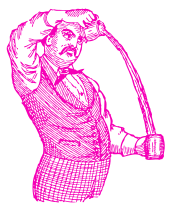

Hello, i want to introduce you to the world of bartending
A Sip Of History
A Brief History of Bartending
The art of bartending has been around for thousands of years. While it has evolved drastically from when the profession first began, it still consists of the same goal – serve alcohol while keeping patrons happy. This brief history of bartending will help you understand where bartending originated and how it has transformed with the help of world events. Also it can shed some light on the important role that bartenders play in our society. Here is a quick look back at some of the highlights in the history of bartending throughout the ages.
Ancient Times
Bartending can be traced back to ancient times in Rome, Greece, and Asia. In fact, there is a recorded history of bartending dating back to when Julius Caesar ruled Ancient Rome. Along popularly traveled routes, travelers could find public drinking houses where they could relax, socialize, and enjoy a glass of wine before continuing on to their destination. Residents of Rome could also find these public drinking houses in their towns, so it wasn’t just travelers who could sip on finely crafted wine. Even earlier than the Roman Empire, the Ancient Greeks set up taverns where patrons could socialize and enjoy a drink poured by craftsmen while being entertained by a play or music.
Middle Ages
During the Middle Ages, bartending was a full profession. Bartenders were usually innkeepers or women who would brew their own drinks, such as wine and mead. During the 15th Century, these bartenders were seen as part of the social elite class because they were able to own property from the money they made through serving alcohol. The public drinking houses of Ancient times soon turned into taverns and pubs (especially in England) where patrons could gather and gossip. At this point in the history of bartending, bartenders became status symbols and familiar with their clientele.
New World
With the discovery of the New World, Europeans made sure to bring over the practice of bartending. Similar to the drinking culture in England, taverns and pubs opened up in the Colonies. It wasn’t until a few centuries after the discovery of America that bartending would be completely revamped. Jeremiah “Jerry” Thomas (1830-1885) became known as the Father of American Mixology. He learned how to bartend in New Haven, Connecticut before going to California during the Gold Rush. It was when he arrived in Europe that he amazed bartenders with his flashy moves and carefully planned proportions of mixed drinks. Thomas also wrote and published the first drink book in the United States, How to Mix Drinks.
Prohibition Era
It was in the early 20th Century that the United States government decided to outlaw all types of alcohol. During Prohibition, the primary source of drinking alcohol was industrial alcohol the kind used for making ink, perfumes and campstove fuel. About 3 gallons of faux gin or whiskey could be made from 1 gallon of industrial alcohol. This was a hard hit for bartenders and mixologists in the history of bartending. Many bartenders were left without jobs. Others decided to open up speakeasies and brew their own alcohol, such as bathtub gin. While alcohol may have been banned, that didn’t stop Americans from drinking and producing it.
Modern Times
Bartending in modern times has drastically evolved since it first originated. Now bartending and mixology is seen as an art. There are bartending schools across the world teaching new bartenders this art as well as how to keep patrons satisfied. Large bartending competitions are held each year with flashy tricks and movements to entertain guests. The history of bartending starts with a basic duty, to refresh travelers on ancient roads. It then evolved for bartenders to become part of the elite class where they provided a place patrons to socialize. It was in the New World that bartending gained such important, especially during the Prohibition era. Now, bartending is an art and trade that has engraved itself into our culture.
Lets Start With Basic Tools
Muddler
A muddler is a bartender's tool, used like a pestle to mash—or muddle—fruits, herbs and spices in the bottom of a glass to release their flavor. Cocktails that require the use of a muddler include: Mojito made with light rum. Caipirinha made with cachaça.
Double Strainer
If you want get your cocktails more smooth or get foam without bubbles you need to double strain your cocktail, for that you use the fine mesh strainer, also known as the sift, commonly known as sieve, is a device for separating wanted elements from unwanted material or for characterizing the particle size distribution of a sample, typically using a woven screen such as a mesh or net or metal.
Strainer
A cocktail strainer is a metal bar accessory used to remove ice from a mixed drink as it is poured into the serving glass. A type of sieve, the strainer is placed over the mouth of the glass or shaker in which the beverage was prepared. Small holes in the device allow only liquids to pass as the beverage is poured. There are two common types of strainers. The Hawthorne strainer is a disc with a handle and two or more stabilizing prongs. A metal spring fixed around the edge of the rim rolls inward to fit inside the glass. The rim of the strainer does not need to touch the rim of the glass, as the spring inside filters out the ice. The Julep strainer is shaped like a bowl with a handle, and will fit tightly into a mixing glass or shaker when inserted at the proper angle. Liquid passes through holes or slits in the bowl.
Bartending Spoon
A bartending spoon is a long-handled spoon used in bartending for mixing and layering of both alcoholic and non-alcoholic mixed drinks. Its length ensures that it can reach the bottom of the tallest jug or tumbler to mix ingredients directly in the glass. A bar spoon holds about 5 millilitres of liquid (the same as a conventional teaspoon). Its long handle is similar to an iced tea spoon, but is usually decorative and elegant some variations mimic large swizzle sticks, with a disc at one end. The shaft is typically thin and threaded so that the fingers can easily grip and rotate the spoon.
Jigger
A jigger, also known as a measure, is a bartending tool used to measure liquor, which is typically then poured into a glass or cocktail shaker. The term jigger in the sense of a small cup or measure of spirits or wine originates in the U.S. in the early 19th century. Many references from the 1800s describe the "jigger boss" providing jiggers of whiskey to Irish immigrant workers who were digging canals in the U.S. Northeast. The style of double-ended jigger common today, made of stainless steel with two unequal sized opposing cones in an hourglass shape, was patented in 1893 by Cornelius Dungan of Chicago. Typically, one cone measures a regulation single shot, and the other some fraction or multiple—with the actual sizes depending on local laws and customs. A contemporary jigger measure in the U.S. usually holds 1.5 US fluid ounces (44 ml), while the jiggers used in the U.K. are typically 25 ml or sometimes 35 ml. Jiggers may also hold other amounts and ratios, and can vary depending on the region and date of manufacture. In the U.S. up until Prohibition, a jigger was commonly known to be about half a gill, or 2 US fluid ounces (59 ml), but starting in the latter part of the 20th century, it is typically interpreted to be 1.5 US fluid ounces (44 ml).
Shaker
Basic bartender tool. Used to mix alcoholic and soft ingredients with ice to make a cocktail. A shaken cocktail is made by putting the desired ingredients in the cocktail shaker. Then it is shaken vigorously for around 10 to 18 seconds, depending upon the size and temperature of the ice. There are 3 types of shakers:
- The Boston Shaker - A two-piece shaker consisting of a 28 imp fl oz (800 ml) metal bottom and a 16 imp fl oz (450 ml) mixing container made of plastic, metal or (more traditionally) glass. The mixing container and bottom are inserted into each other for shaking or used separately for stirring or muddling.
- The Cobbler Shaker - A three-piece cocktail shaker that has tapers at the top and ends with a built-in strainer and includes a cap. The cap can often be used as a measure for spirits or other liquids.
- The French Shaker - A two-piece shaker consisting of a metal bottom and a metal cap. A strainer is always required for this type of shaker, barring the separation method mentioned above.
Squeezer
A squeezer is a small kitchen utensil designed to extract juice from lemons or other citrus fruit such as oranges, grapefruit, or lime. It is designed to separate and crush the pulp of the fruit in a way that is easy to operate. In case of not having one you can always use the edge of knife and squeeze citrus quarters on it to get the juice.
Bartending Glass
Special type of tall, crystal glass which is used alongside with bartending spoon to prepare special cocktails like Manhattan, Negroni or Godfather. Cocktails made in this glass are mostly mix of only alcohols, because stiring doesn't dilute cocktails that much, so they get more flavour and power from mentioned alcohols, but also it is very hard to disolve ingredients like juices, purees, etc. in it so it's essential to use this alternately with shaker.
Peeler
Used for peeling citrus from its skin, which is very aromatic and is used for garnish and flavoring your cocktails with fresh smell of fruits. The thing is to rub the glass rim with aromatic side of skin and then use it to decorate your cocktail making it very elegant and minimalistic beatiful.
And Continue With Basic Alcohols & Cocktails
Gin
Gin is a distilled alcoholic drink that derives its predominant flavour from juniper berries (Juniperus communis). Gin originated as a medicinal liquor made by monks and alchemists across Europe, particularly in Southern France, Flanders and the Netherlands, to provide aqua vita from distillates of grapes and grains. It then became an object of commerce in the spirits industry. Gin emerged in England after the introduction of the jenever, a Dutch and Belgian liquor that was originally a medicine. Although this development had been taking place since the early 17th century, gin became widespread aftge of herbal ingredients, giving rise to a number of distinct styles and brands. After juniper, gin tends to be flavoured with botanical/herbal, spice, floral or fruit-flavours or often a combination. It is most commonly consumed mixed with tonic water. Gin is also often used as a base spirit to produce flavoured gin-based liqueurs such as, for example, sloe gin, traditionally by the addition of fruit, flavourings and sugar.
Negroni
- 30ml Gin
- 30ml Campari
- 30ml Sweet Vermouth
Pour all ingredients to chilled bartending glass and stir for about 15 seconds, then pour the mixture over ice cubes in short cocktail glass. Garnish with fresh orange peel.
Vodka
Vodka is a clear distilled alcoholic beverage with different varieties originating in Poland, Russia and Sweden.It is composed primarily of water and ethanol, but sometimes with traces of impurities and flavorings. Traditionally it is made by distilling the liquid from cereal grains that have been fermented, with potatoes arising as a substitute in more recent times, and some modern brands using fruits, honey or maple sap as the base. Since the 1890s, standard vodkas have been 40% alcohol by volume (ABV) (80 U.S. proof). The European Union has established a minimum alcohol content of 37.5% for vodka. Vodka in the United States must have a minimum alcohol content of 40%. Vodka is traditionally drunk "neat" (not mixed with water, ice, or other mixers), and it is often served freezer chilled in the vodka belt of Belarus, Estonia, Finland, Iceland, Lithuania, Latvia, Norway, Poland, Russia, Sweden, and Ukraine.
Pornstar Martini
- 40ml Vanilla Vodka
- 30ml Lemon Juice
- 20ml Passoa
- 20ml Passion Fruit Puree
- 10ml Vanilla Syrup
- 80ml Champagne
Mix all ingredients in shaker, and shake it for 15 seconds. Pour Champagne on side, serve in martini glass or coupette. Garnish with half of passion fruit thrown into the middle of glass.
Whisky
Whisky or whiskey is a type of distilled alcoholic beverage made from fermented grain mash or by distilling beer. Various grains (which may be malted) are used for different varieties, including barley, corn, rye, and wheat. Whisky is typically aged in wooden casks, generally made of charred white oak. Whisky is a strictly regulated spirit worldwide with many classes and types. The typical unifying characteristics of the different classes and types are the fermentation of grains, distillation, and aging in wooden barrels.The word whisky (or whiskey) is an anglicisation of the Classical Gaelic word uisce (or uisge) meaning "water" (now written as uisce in Modern Irish, and uisge in Scottish Gaelic). (This Gaelic word shares its ultimate origins with Germanic "water" and Slavic "voda" of the same meaning.) Distilled alcohol was known in Latin as aqua vitae ("water of life"). This was translated into Old Irish as uisce beatha, which became uisce beatha in Irish and uisge beatha in Scottish Gaelic. Early forms of the word in English included uskebeaghe (1581), usquebaugh (1610), usquebath (1621), and usquebae (1715).
Manhattan
- 50ml Rye Whisky
- 20ml Sweet Vermouth
- 2 dashes of Angostura Bitter
Pour all ingredients to chilled bartending glass and stir for about 15 seconds, then pour the mixture to chilled martini or coupette glass and garnish with maraschino cherry or fresh orange peel.
Liquors
Liquor (also distilled alcohol) is an alcoholic drink produced by distillation of grains, fruits, or vegetables that have already gone through alcoholic fermentation. The distillation process purifies the liquid to increase its alcohol by volume. As liquors contain significantly more alcohol (ethanol) than other alcoholic drinks, they are considered "harder" – in North America, the term hard liquor is used to distinguish distilled alcoholic drinks from non-distilled ones, whereas the term spirits is used in the UK. Examples of liquors include brandy, vodka, baijiu, shōchū, soju, gin, rum, tequila, mezcal, and whisky. Like other alcoholic drinks, liquor is typically consumed for the psychoactive effects of ethanol. Liquor may be consumed on its own (“neat”), typically in small amounts. In undiluted form, distilled beverages are often slightly sweet, bitter, and typically impart a burning mouthfeel, with a strong odor from the alcohol; the exact flavor varies between different varieties of liquor and the different impurities they impart. Liquor is also frequently enjoyed in diluted form, as flavored liquor or as part of a mixed drink; with cocktails being a common category of beverage that utilize liquor. Due to its high ethanol content, drinking a large amount of undiluted liquor within a short period of time causes serious and acute health problems associated with alcohol poisoning. Consumption of liquor correlates with higher mortality rates, with the rate of mortality increasing with consumption. Compared to other types of alcoholic beverage, excess consumption of liquor is more strongly associated with harmful health effects, which may be attributed to liquor drinkers consuming higher levels of alcohol on average.
Cointreaupolitan
- 50ml Cointreau
- 30ml Cranberry Juice
- 20ml Lime Juice
Mix all ingredients in shaker, and shake it for 15 seconds. Pour everything into chilled martini or coupette glass and garnish with fresh orange peel, you can also burn the juices from peel over the cocktail.
Rum
Rum is a liquor made by fermenting then distilling sugarcane molasses or sugarcane juice. The distillate, a clear liquid, is usually aged in oak barrels. Most rums are produced in Caribbean and American countries, but also in other sugar-producing countries, such as the Philippines and India. Rums are produced in various grades. Light rums are commonly used in cocktails, whereas "golden" and "dark" rums were typically consumed straight or neat, iced ("on the rocks"), or used for cooking, but are now commonly consumed with mixers. Premium rums are made to be consumed either straight or iced. Rum plays a part in the culture of most islands of the West Indies as well as the Maritime provinces and Newfoundland, in Canada. The beverage has famous associations with the Royal Navy (where it was mixed with water or beer to make grog) and piracy (where it was consumed as bumbo). Rum has also served as a popular medium of economic exchange, used to help fund enterprises such as slavery (see Triangular trade), organized crime, and military insurgencies (e.g., the American Revolution and Australia's Rum Rebellion).
Hemingway Daiquiri
- 120ml White Rum
- 40ml Fresh Grapefruit Juice
- 30ml Lime Juice
- 20ml Maraschino liqueur
- 10ml Sugar Syrup
Mix all ingredients in shaker, and shake it for 15 seconds. Pour into large cocktail glass and garnish with lime wedge.
Tequila
Tequila is a distilled beverage made from the blue agave plant, primarily in the area surrounding the city of Tequila 65 km (40 mi) northwest of Guadalajara, and in the Jaliscan Highlands (Los Altos de Jalisco) of the central western Mexican state of Jalisco. The red volcanic soils in the region of Tequila are well suited for growing the blue agave, and more than 300 million of the plants are harvested there each year. Agave grows differently depending on the region. Blue agaves grown in the highlands Los Altos region are larger and sweeter in aroma and taste. Agaves harvested in the lowlands have a more herbaceous fragrance and flavor. Due to its historical and cultural importance, the region near Tequila was declared a UNESCO World Heritage Site in 2006, the Agave Landscape and Ancient Industrial Facilities of Tequila. Mexican laws state that tequila can only be produced in the state of Jalisco and limited municipalities in the states of Guanajuato, Michoacán, Nayarit, and Tamaulipas. Tequila is recognized as a Mexican designation of origin product in more than 40 countries. It was protected through NAFTA in Canada and the United States until July 2020, through bilateral agreements with individual countries such as Japan and Israel, and has been a protected designation of origin product in the European Union since 1997. Aside from its geographical distinction, tequila is differentiated from mezcal in that it is made only from blue agave and the beverages are prepared in different ways. Tequila is commonly served neat in Mexico and as a shot with salt and lime around the world. Tequila must have between 35- and 55-percent alcohol content (70 and 110 U.S. proof). It must contain at least 40-percent alcohol (80 U.S. proof) to be sold in the United States and Canada.
Tommy's Margherita
- 40ml Silver Tequila
- 30ml Lime Juice
- 20ml Agave Syrup
Mix all ingredients in shaker, and shake it for 15 seconds. Pour into sombrero shaped glass, also known as margherita glass. Garnish with salt cover on the rim and lime wedge.
Cognac
Cognac is a variety of brandy named after the commune of Cognac, France. It is produced in the surrounding wine-growing region in the departments of Charente and Charente-Maritime. Cognac production falls under French appellation d'origine contrôlée designation, with production methods and naming required to meet certain legal requirements. Among the specified grapes, Ugni blanc, known locally as Saint-Émilion, is most widely used. The brandy must be twice distilled in copper pot stills and aged at least two years in French oak barrels from Limousin or Tronçais. Cognac matures in the same way as whiskies and wines barrel age, and most cognacs spend considerably longer "on the wood" than the minimum legal requirement.
Sazerac
- 40ml Cognac
- 5ml Absinth
- 10ml Sugar Syrup
- 3 dashes of Peychaud's Bitters
Pour all ingredients to chilled bartending glass and stir for about 15 seconds. Pour the mixture over ice cubes in short cocktail glass previously aromatized with absinth. Garnish with lemon peel.
Wine
Wine is an alcoholic drink typically made from fermented grape juice. Yeast consumes the sugar in the grapes and converts it to ethanol, carbon dioxide, and heat. Different varieties of grapes and strains of yeasts produce different styles of wine. These variations result from the complex interactions between the biochemical development of the grape, the reactions involved in fermentation, the grape's growing environment (terroir), and the production process. Many countries enact legal appellations intended to define styles and qualities of wine. These typically restrict the geographical origin and permitted varieties of grapes, as well as other aspects of wine production. Wines not made from grapes involve fermentation of additional crops, including rice wine and other fruit wines such as plum, cherry, pomegranate, currant and elderberry. Wine has been produced for thousands of years. The earliest evidence of wine is from ancient Georgia (6000 BC), Iran (5000 BC), and Sicily (4000 BC). New World wine has some connection to alcoholic beverages made by the indigenous peoples of the Americas, but is mainly connected to later Viking area of Vinland and Spanish traditions in New Spain. Later, as Old World wine further developed viticulture techniques, Europe would encompass three of the largest wine-producing regions. Today, the five countries with the largest wine-producing regions are in Italy, Spain, France, the United States, and China. Wine has long played an important role in religion. Red wine was associated with blood by the ancient Egyptians and was used by both the Greek cult of Dionysus and the Romans in their Bacchanalia; Judaism also incorporates it in the Kiddush, and Christianity in the Eucharist. Egyptian, Greek, Roman, and Israeli wine cultures are still connected to these ancient roots. Similarly the largest wine regions in Italy, Spain, and France have heritages in connection to sacramental wine, likewise, viticulture traditions in the Southwestern United States started within New Spain as Catholic friars and monks first produced wines in New Mexico and California.
New York Sour
- 40ml Whisky
- 30ml Lemon Juice
- 20ml Sugar Syrup
- 30ml Dry Red Wine
- 2 dashes of Angostura Bitter
- Egg White
Mix all ingredients ,besides wine in shaker, and shake it for 15 seconds, then get rid of ice and shake once more. Pour everything over ice cubes in short cocktail glass, or in martini glass/coupette. Add wine slowly at the top of the cocktail and garnish with fresh lemon, or orange peel.
Sparkling Wines & Champagne
Sparkling wine is a wine with significant levels of carbon dioxide in it, making it fizzy. While the phrase commonly refers to champagne, EU countries legally reserve that term for products exclusively produced in the Champagne region of France. Sparkling wine is usually either white or rosé, but there are examples of red sparkling wines such as the Italian Brachetto, Bonarda and Lambrusco, and the Australian sparkling Shiraz. The sweetness of sparkling wine can range from very dry brut styles to sweeter doux varieties (French for 'hard' and 'soft', respectively). The sparkling quality of these wines comes from its carbon dioxide content and may be the result of natural fermentation, either in a bottle, as with the traditional method, in a large tank designed to withstand the pressures involved (as in the Charmat process), or as a result of simple carbon dioxide injection in some cheaper sparkling wines. In EU countries, the word "champagne" is reserved by law only for sparkling wine from the Champagne region of France. The French terms Mousseux and Crémant refer to sparkling wine not made in the Champagne region, such as Blanquette de Limoux produced in Southern France. Sparkling wines are produced around the world, and are often referred to by their local name or region, such as Prosecco, Franciacorta, Trento DOC, Oltrepò Pavese Metodo Classico and Asti from Italy (the generic Italian term for sparkling wine being spumante), Espumante from Portugal, Cava from Spain, and Cap Classique from South Africa. Sparkling wines have been produced in Central and Eastern Europe since the early 19th-century. "Champagne" was further popularised in the region, late in the century, when József Törley started production in Hungary using French methods, learned as an apprentice in Reims. Törley has since become one of the largest European producers of sparkling wine. The United States is a significant producer of sparkling wine today, with producers in numerous states. Recently, production of sparkling wine has re-started in the United Kingdom after a long hiatus.
Classic Champagne Cocktail
- 120ml Champagne
- 20ml Cognac
- 2 dashes of Angostura Bitter
- Sugar Cube
Soak sugar cube with angostura, pour rest of ingredients straight to chilled champagne glass, throw the cube into the glass, stir a little and garnish with lemon peel.